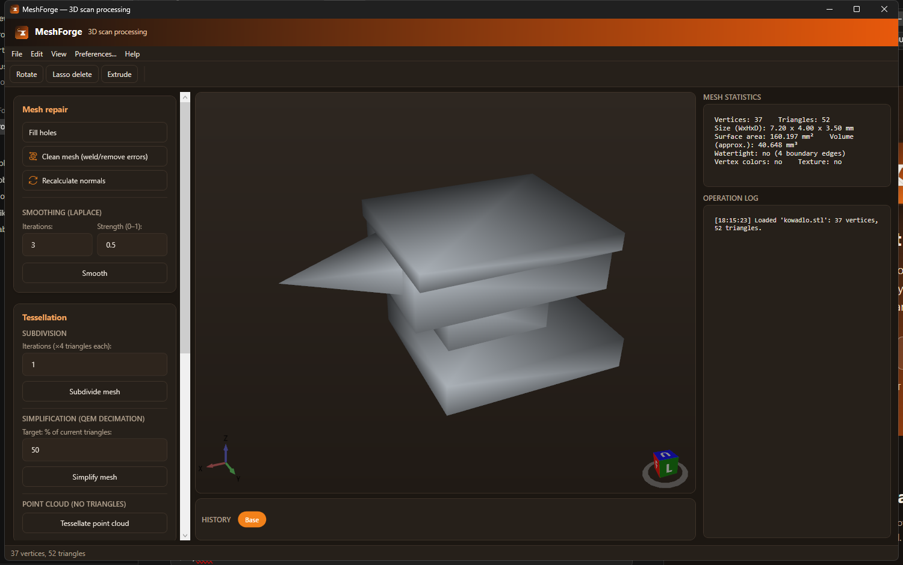
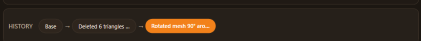
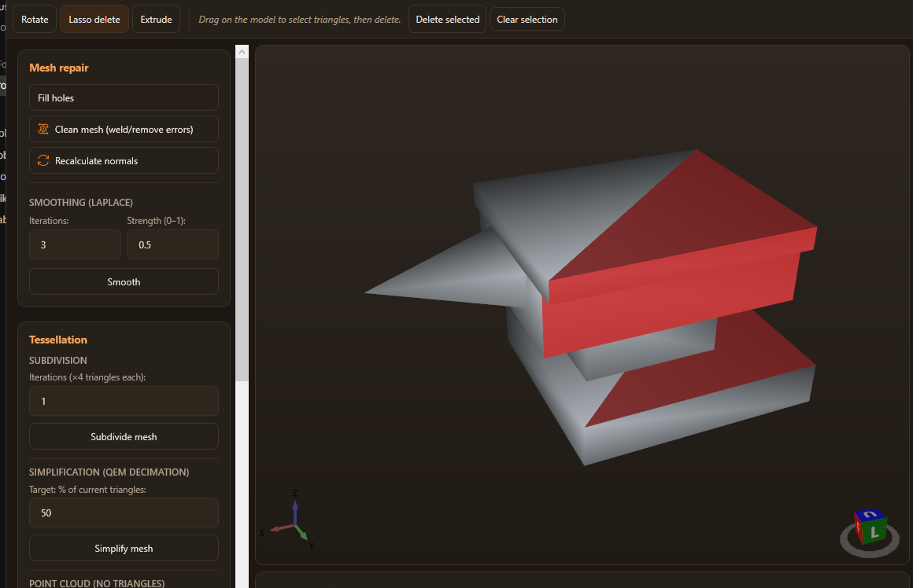
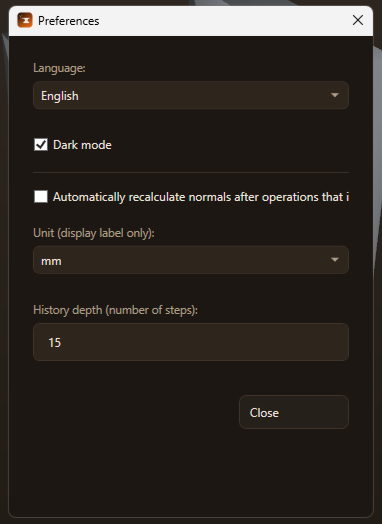

A free Windows app for repairing, smoothing, tessellating, and editing 3D scans, with a Fusion 360-style history timeline and a real mesh-editing toolbar.
A real, working desktop app, not a prototype. Every feature below is live and tested.

Load a scan, see live statistics (vertex/triangle count, dimensions, surface area, volume, watertightness), and work through repair, smoothing, tessellation, texturing, and transform tools from one panel.

Every operation adds a step to a scrubbable bar under the viewport. Click any step to jump straight to it, or walk back and forth with Undo/Redo: no more guessing what a single "Undo" button will do.

Drag a lasso straight over the model to select triangles (they highlight in red), then delete them. The same toolbar also has manual 90° rotation and a click-to-extrude tool for pushing a face outward.

Switch between Polish and English on the fly, pick dark or light mode, choose a display unit for the statistics panel, and tune how many history steps are kept, all remembered between sessions.
No subscriptions, no cloud upload: everything runs locally.
Fill holes (ear-clipping on a fitted plane), weld duplicate vertices, remove degenerate triangles, and recalculate area-weighted normals.
Reduce scanner noise without shrinking hole boundaries inward, with adjustable iterations and strength.
Subdivide for more detail, or simplify with Garland-Heckbert quadric error decimation down to a target triangle count.
Turn a raw point cloud into a mesh via PCA plane fitting and 2D Delaunay triangulation.
Project a photo onto the model: planar, cylindrical, or spherical mapping, whichever matches the shape.
Detects flat surfaces the same way Orca/PrusaSlicer's "place on face" does, with a live 3D picker, and lays the model flat on the one you choose.
Append a second scan into the current one to combine separate captures.
A scrubbable, Fusion 360-style step bar: jump to any previous step, with configurable history depth.
Manual 90° rotation on any axis, lasso-select + delete triangles, and click-to-extrude a face.
Center, normalize size, and flip normals for a mesh that came in "inside-out".
Import OBJ, STL (ASCII/binary), PLY (ASCII), and XYZ point clouds. Export OBJ, STL, PLY, and XYZ.
Switch language and theme live, no restart, both remembered between sessions.
Free, self-contained Windows installer, no separate .NET install needed.
dotnet run --project src/MeshForge.App; see the
README.